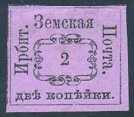
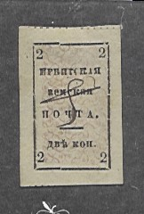
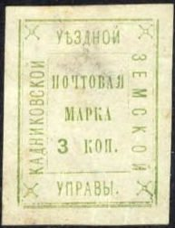
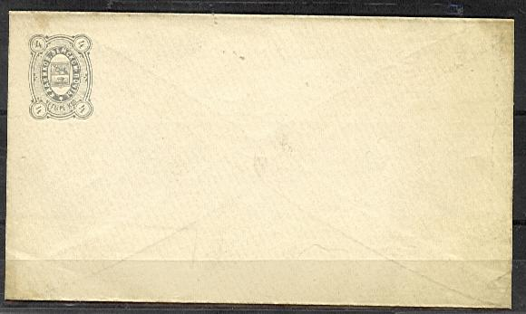

Two forgeries of these stamps (made in the early 20th century)
Return To Catalogue - Go to Zemstvos overview - Russia
Note: on my website many of the
pictures can not be seen! They are of course present in the
catalogue;
contact me if you want to purchase it.
1874 Text, ornaments in the center

2 k black on lilac
Two forgeries of these stamps (made in the early 20th century)
1880 Text in circle surrounded by a rectangle, many types


2 k black on lilac 4 k black on green 8 k black on yellow
1880 Text with background in wavy lines


2 k black and red
1893 Like arms type of Russia

1 k orange (1913) 2 k lilac 2 k red (1906) 2 k brown (1908) 10 k red
1899 Arms

2 k blue on blue (exists imperforated)
1901 Text, perforated or imperforated
(Sorry, no picture available yet)
2 k black on blue
1903 Arms, perforated or imperforated
2 k brown 4 k blue 8 k blue and red
1871 Arms in a circle, imperforated
3 k blue
I've been told that these are reprints of these stamps.
1879 Text, imperforated



3 k green 3 k green (smaller size, slightly different design)
1883 Arms, perforated

(Reduced size)
1 k geen, red and blue (1897) 3 k green (exists imperforated) 3 k green and red (1890) 3 k green, red and blue (1900)
1903 Arms, new type, perforated


1 k brown (exists imperforated) 1 k green 1 k violet 3 k orange 3 k green (exists imperforated) 3 k red 3 k blue
Envelope from 1884:
